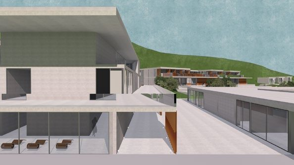
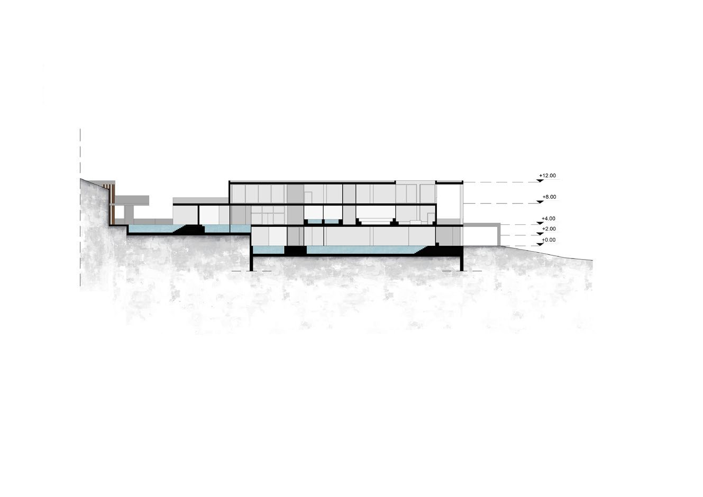
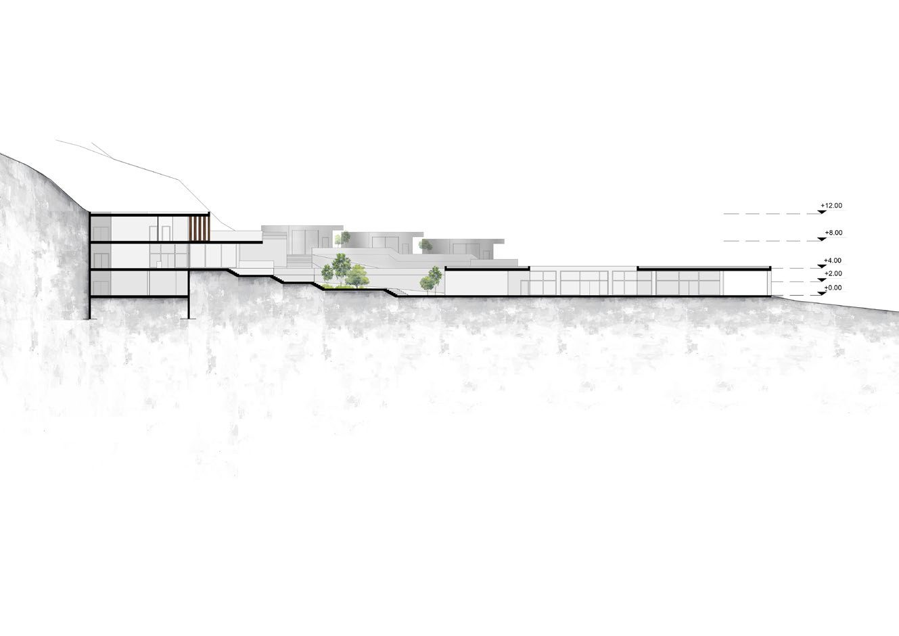
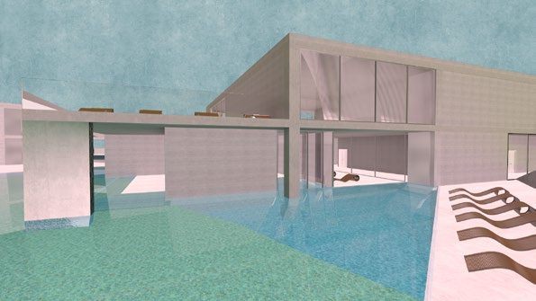
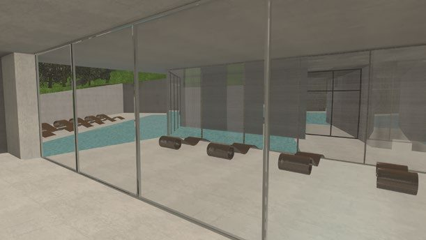
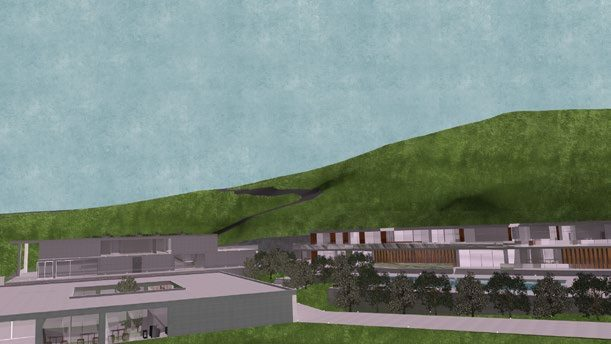
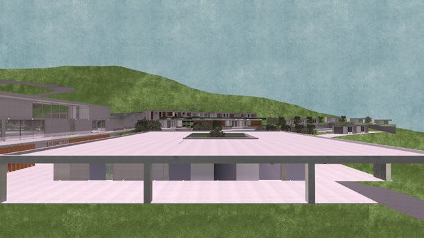
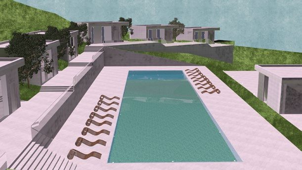
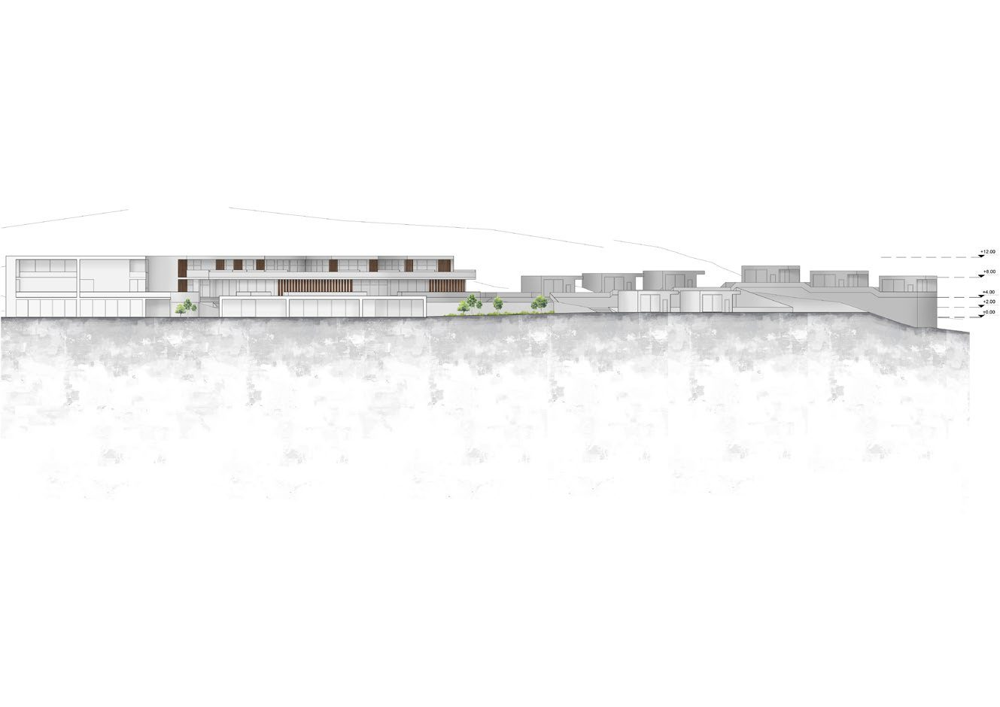
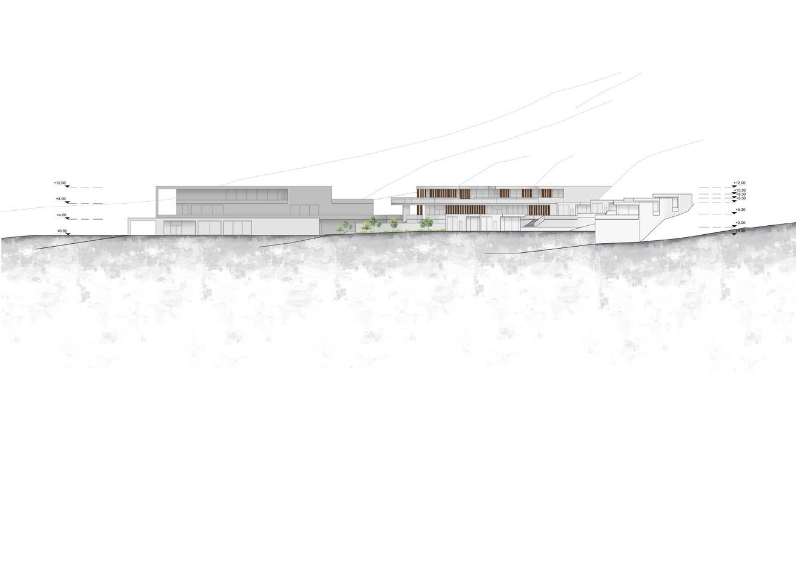

Spa facilities & hospitality areas
The composite concept was carefully developed within the natural landscape of Therma, Samothrace, with an emphasis on respecting and enhancing the site's unique character.
Extensive research and analysis of the area informed key design objectives, including the use of simple, minimalistic forms, tranquil lines, a modular cellular structure and a progression across multiple levels.
These guiding principles inspired the creation of spa facilities, a wellness center, and hospitality spaces that blend harmoniously with the natural terrain and atmosphere of Therma.
Three volumes, one site
The facilities are organized into three distinct architectural volumes, each dedicated to a specific programmatic function. This arrangement allows each volume to operate autonomously, ensuring efficient functionality, while the unified design language creates a cohesive whole that is visually and spatially integrated.
The result is an architectural composition that balances independence and unity, seamlessly connecting the building's uses to both the surrounding environment and to one another.









